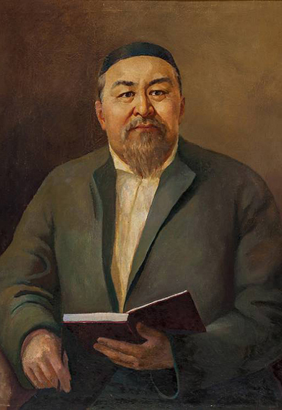
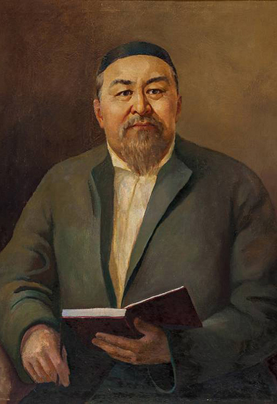

Абай (Ибраһим) Құнанбайұлы (10 тамыз 1845 жыл – 6 шілде 1904 жыл) — ұстаз, ақын, ағартушы, жазба қазақ әдебиетінің, қазақ әдеби тілінің негізін қалаушы, философ, сазгер, аудармашы, саяси қайраткер, либералды көзқарасын ислам дініне таяна отырып, орыс және еуропа мәдениетімен жақындасу арқылы қазақ мәдениетін жаңартуды көздеген реформатор. Абай ақындық шығармаларында қазақ халқының әлеуметтік, қоғамдық, моральдық мәселелерін арқау еткен. Абай Шығыс пен Батыс мәдениетін жетік білген. Бірқатар әлем ойшылдарының еңбектерімен жақсы таныс болған. Философиялық трактаттар стилінде жазылған «Қара сөздері» – тақырып ауқымдылығымен, дүниетанымдық тереңдігімен, саяси-әлеуметтік салмақтылығымен құнды.
Абай Құнанбайұлы Орта жүздің Тобықты руынан шыққан. Әкесі Құнанбай Өскенбайұлы өз заманындағы атақ даңқы алысқа кеткен адамдардың бірі болған. Патша өкіметі XIX ғасырдың ортасындағы бір сайлауда оны Қарқаралы ауданының аға сұлтандығына бекіткен. Абайдың анасы Ұлжан Орта жүздің Арғын тайпасынан Қаракесек руының қызы, Абай бала кезден Өскенбайдың әулетінің Үлкен әжесі атанып кеткен Зере әжесінің қолында өсті, Өскенбайдың бәйбішесі Тоқбала анамыз (Зере) Найманның Матай болысының байы Бектемірдің қызы, Зере әжеміз Ибраһимді "Абай" деп еркелетіп атаған. Содан бері бұл есіммен Абай тарихқа енді. Осындай текті ортадан шыққан Құнанбай мен Ұлжаннан туған төрт ұлдың бірі Абай жастайынан-ақ ерекше қабілетімен, ақылдылығымен көзге түседі. Балаға сыншы әкесі осы баласынан қатты үміт етеді. Әкесі оның зеректілігін байқағаннан кейін, 10 жасқа толған соң Семейдегі Ахмет Риза медресесіне береді. Медреседе төрт жыл оқығаннан кейін, оқудан шығарып алып, қасында ұстап, ел басқару ісіне баули бастайды. Әкесінің төңірегінде ел жақсыларымен араласып, өз халқының рухани мәдениет жүйелерімен жете танысады. Өзі билер үлгісінде шешен сөйлеуге төселеді. Ұтымды сөзімен, әділ билігімен елге танылып, аты шығады. Көп ұзамай, жетпісінші жылдардың бас кезінде Қоңыр Көкше дейтін елге болыс болады. Билікке араласып, біраз тәжірибе жинақтағаннан кейін, ол халық тұрмысындағы көлеңкелі жақтарға сәуле түсіруге күш салып бағады. Бірақ онысынан пәлендей көңіл тоятындай нәтиже шығара алмайды. Сондықтан халқына пайдалы деп тапқан істерін көркем сөзбен, әсіресе, өлеңмен насихаттамақ болады. Абай бір жағынан шығыс классиктері Низами, Сағди, Қожа Хафиз, Науаи, Физули, Жәми тағы басқаларды оқыса, екінші жағынан Александр Пушкин, Александр Герцен, Михаил Салтыков-Щедрин, Николай Некрасов, Михаил Лермонтов, Лев Толстой, Иван Крылов, Фёдор Достоевский, Иван Тургенев, Николай Чернышевский мұраларын оқып, терең таныс болған, Батыс әдебиетінен Гёте, Джордж Байрон сияқты ақындарды оқып, Дрепер, Спиноза, Спенсер, Льюис, Дарвин сынды ғалымдардың еңбектерін зерттейді.
Абай 23 тамыз 1845 ж. қазіргі Семей облысының Шыңғыс тауларында, Қарқаралының аға сұлтаны Құнанбайдың төрт әйелінің бірі, екінші әйелі Ұлжаннан туған. Ақынның арғы тегі Орта жүз Тобықты, Арғын ішіндегі Олжай батырдан басталады. Олжайдан Айдос, Қайдос, Жігітек есімді 3 ұрпақ тарайды. Бұлардың әрқайсысы кейін бір-бір рулы ел болып кеткен. Айдостың Айпара деген әйелінен: Ырғызбай, Көтібақ, Топай, Торғай, деген 4 ұл туады.Бұлардың әкесі момын, шаруа адамы, ал шешесі өткір тілді, өр мінезді әйел болған.
| 1845 жыл 23 тамыз | Абай Құнанбайұлы бұрынғы Семей губерниясына қарасты Шыңғыс болысы Сырт Қасқабұлақта Құнанбай Өскенбайұлының отбасында дүниеге келді. |
| 1852-1855 жылдары | Абай ауыл медресесінде оқиды. |
| 1855 жыл | Абайдың 10 жасында тұңғыш өлең жазған. |
| 1855-1859 жылдары | Абай Құнанбайұлы Семей қаласындағы Ахмет Риза медресесінде оқиды. |
| 1860 жылы | Абай Ділдә Түсіпқызына (Алшынбайдың немереқызы) (1843-1924) үйленеді. |
| 1861 жылы | Абайдың тұңғыш баласы Ақылбай (1861-1904) дүниеге келеді. |
| 1862 жылы | Ділдәдән қызы Күлбадан (1862-1932) туған. |
| 1865 жыл | кезектен тыс болыстық сайлауда Күшік Тобықты болысына болыстыққа ағасы Құдайберді Құнанбаев, оған кандидат болып Абай сайланады. |
| 1866 жылы | ағасы Құдайберді қайтыс болды. |
| 1866-1868 жылдары | Абай Күшік Тобықты болысының управителі болды. |
| 1869 жылы | Абайдың оқымысты баласы Әбдірахман (1869-1895) дүниеге келді. |
| 1872-1874 жылдары | Абай Күшік Тобықты болысына екінші рет болыс болды. |
| 1886 жылы 4 мамыр | Семейдің статистикалық комитетіне, досы Михаэлистің ұсынуымен, Абай мүше болып сайланады. |
| 1887 жылы | анасы Ұлжан (1810-1887) дүние салады. |
| 1890 жылы | Абай аңшы мылтығымен марапатталады. |
| 1894 жылы | Абай Еркежан Ибаққызына (1858-1927) үйленеді. |
| 1893-1894 жылдары | Семей қаласының бастауыш білім қамқоршылар қоғамына мүшелік жарна төлегені туралы архив дерегі сақталған. Абай мен балалары Ақылбай, Мағауия жарна төлеген. |
| 1903 жылы 18 сәуірде | Семейдің соғыс губернаторы генерал Сухотиннің бұйрығымен Абайдың, Мағауия, Турағұлдың үйлеріне тінту жүргізді. |
| 1904 жылы 6 шілде | Өмірден озады |